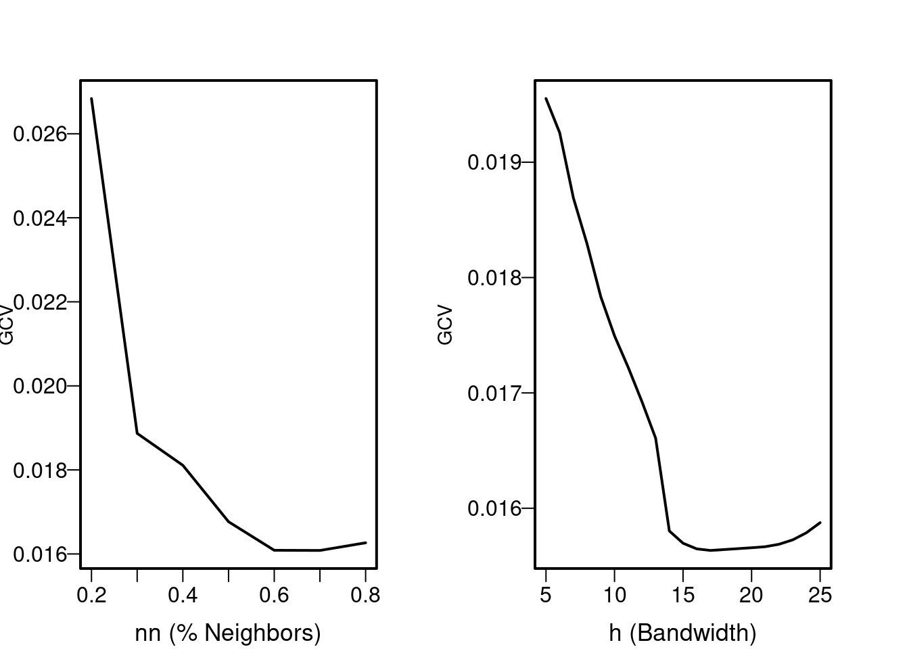
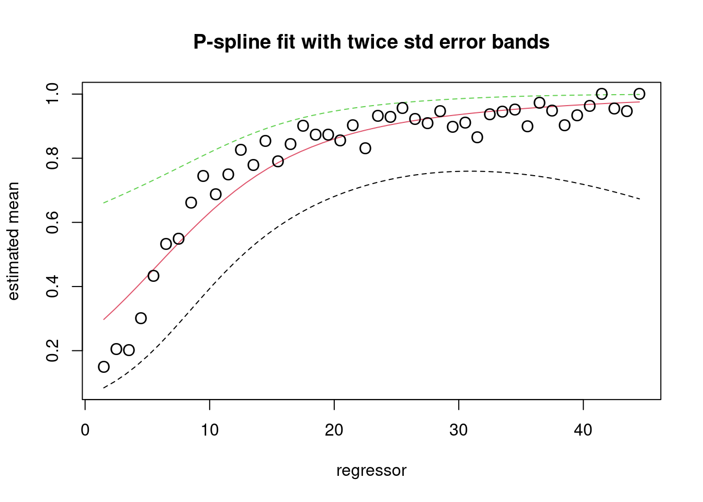
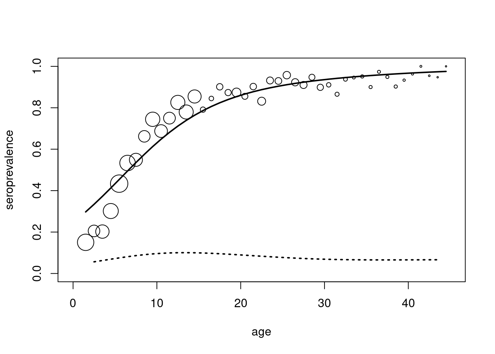
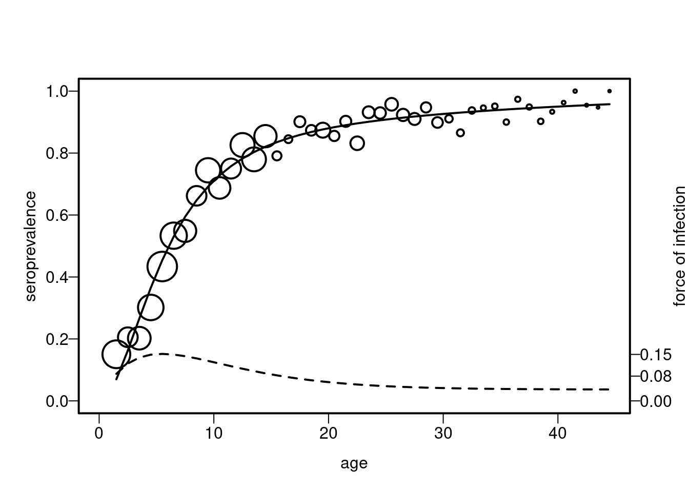

devtools::install_github("OUCRU-Modelling/serosv")
library(serosv)Application of serosv package to Mumps serological data from the UK in 1986 and 1987
Use “serosv” package
Import dataset
rubella <- rubella_uk_1986_1987
rubella$neg <- rubella$tot - rubella$posFarrington’s model with \(\gamma\) = 0
model <- suppressWarnings(farrington_model(
rubella$age, rubella$pos, rubella$tot,
start=list(alpha=0.1,beta=0.1,gamma=0.1)
))
model$info
Call:
mle(minuslogl = farrington, start = start, fixed = fixed)
Coefficients:
alpha beta gamma
0.07035482 0.20235373 0.03658457
$sp
[1] 0.06980718 0.16284289 0.26576492 0.36501154 0.45397581 0.53046603
[7] 0.59468313 0.64791416 0.69179469 0.72793959 0.75778572 0.78254511
[13] 0.80321035 0.82058103 0.83529564 0.84786198 0.85868359 0.86808153
[19] 0.87631178 0.88357913 0.89004794 0.89585062 0.90109426 0.90586578
[25] 0.91023596 0.91426270 0.91799348 0.92146742 0.92471683 0.92776851
[31] 0.93064480 0.93336436 0.93594287 0.93839358 0.94072771 0.94295485
[37] 0.94508323 0.94711996 0.94907123 0.95094244 0.95273838 0.95446329
[43] 0.95612098 0.95771487
$foi
[1] 0.08748223 0.12058008 0.13984314 0.14922954 0.15171152 0.14950376
[7] 0.14424122 0.13711725 0.12899045 0.12046732 0.11196583 0.10376407
[13] 0.09603753 0.08888736 0.08236168 0.07647165 0.07120337 0.06652672
[19] 0.06240172 0.05878322 0.05562406 0.05287740 0.05049811 0.04844378
[25] 0.04667519 0.04515660 0.04385575 0.04274385 0.04179531 0.04098760
[31] 0.04030095 0.03971811 0.03922410 0.03880593 0.03845238 0.03815383
[37] 0.03790197 0.03768973 0.03751104 0.03736073 0.03723440 0.03712830
[43] 0.03703927 0.03696462
$df
$df$age
[1] 1.5 2.5 3.5 4.5 5.5 6.5 7.5 8.5 9.5 10.5 11.5 12.5 13.5 14.5 15.5
[16] 16.5 17.5 18.5 19.5 20.5 21.5 22.5 23.5 24.5 25.5 26.5 27.5 28.5 29.5 30.5
[31] 31.5 32.5 33.5 34.5 35.5 36.5 37.5 38.5 39.5 40.5 41.5 42.5 43.5 44.5
$df$pos
[1] 31 30 34 57 95 104 90 96 134 110 111 147 138 141 53 49 73 69 97
[20] 65 74 84 82 79 90 84 81 72 71 51 45 45 35 39 36 37 37 37
[39] 28 26 25 21 18 18
$df$tot
[1] 206 146 168 189 219 195 164 145 180 160 148 178 177 165 67 58 81 79 111
[20] 76 82 101 88 85 94 91 89 76 79 56 52 48 37 41 40 38 39 41
[39] 30 27 25 22 19 18
attr(,"class")
[1] "farrington_model"Find the best fractional polynomial
First degree factional polynomial with logit link function
best_1d <- find_best_fp_powers(
rubella$age, rubella$pos, rubella$tot,
p=seq(-2,3,0.01), mc=F, degree=1, link="logit"
)
best_1d$p
[1] 0.05
$deviance
[1] 56.18916
$model
Call: glm(formula = as.formula(formulate(p_cur)), family = binomial(link = link))
Coefficients:
(Intercept) I(age^0.0499999999999998)
-32.48 29.67
Degrees of Freedom: 43 Total (i.e. Null); 42 Residual
Null Deviance: 1369
Residual Deviance: 56.19 AIC: 226.7Second degree factional polynomial without monotonicity constraint with logit link function
best_2d <- find_best_fp_powers(
rubella$age, rubella$pos, rubella$tot,
p=seq(-2,3,0.1), mc=FALSE, degree=2, link="logit"
)
best_2d$p
[1] -0.9 -0.9
$deviance
[1] 37.57966
$model
Call: glm(formula = as.formula(formulate(p_cur)), family = binomial(link = link))
Coefficients:
(Intercept) I(age^-0.9)
4.342 -4.696
I(I(age^-0.9) * log(age))
-9.845
Degrees of Freedom: 43 Total (i.e. Null); 41 Residual
Null Deviance: 1369
Residual Deviance: 37.58 AIC: 210.1Second degree factional polynomial with monotonicity constraint with logit link function
best_2d_mn <- find_best_fp_powers(
rubella$age, rubella$pos, rubella$tot,
p=seq(-2,3,0.1), mc = T,degree=2, link="logit"
)
best_2d_mn$p
[1] -0.9 -0.9
$deviance
[1] 37.57966
$model
Call: glm(formula = as.formula(formulate(p_cur)), family = binomial(link = link))
Coefficients:
(Intercept) I(age^-0.9)
4.342 -4.696
I(I(age^-0.9) * log(age))
-9.845
Degrees of Freedom: 43 Total (i.e. Null); 41 Residual
Null Deviance: 1369
Residual Deviance: 37.58 AIC: 210.1| Fractional polynomials | Deviance | Power | AIC |
|---|---|---|---|
| First degree | 56.19 | 0.05 | 226.7 |
| Second degree without monocity | 37.58 | (-0.9,-0.9) | 210.1 |
| Second degree with monocity | 37.58 | (-0.9,-0.9) | 210.1 |
Because the deviance and AIC of second degree fractional polynomials are lower than the first degree, the best second degree fractional polynomial for the UK data on rubella was obtained for the powers (−0.9, −0.9)
fpmd <- fp_model(
rubella$age, rubella$pos, rubella$tot,
p=c(0.9, 0.9), link="logit")
fpmd$info
Call: glm(formula = as.formula(formulate(p)), family = binomial(link = link))
Coefficients:
(Intercept) I(age^0.9) I(I(age^0.9) * log(age))
-3.2717 1.0156 -0.2174
Degrees of Freedom: 43 Total (i.e. Null); 41 Residual
Null Deviance: 1369
Residual Deviance: 46.68 AIC: 219.2
$sp
1 2 3 4 5 6 7 8
0.1261071 0.1963209 0.2735484 0.3530314 0.4303609 0.5022901 0.5669385 0.6236014
9 10 11 12 13 14 15 16
0.6724014 0.7139464 0.7490680 0.7786514 0.8035397 0.8244873 0.8421457 0.8570642
17 18 19 20 21 22 23 24
0.8696999 0.8804301 0.8895642 0.8973559 0.9040131 0.9097060 0.9145742 0.9187327
25 26 27 28 29 30 31 32
0.9222761 0.9252822 0.9278154 0.9299288 0.9316663 0.9330638 0.9341509 0.9349515
33 34 35 36 37 38 39 40
0.9354849 0.9357663 0.9358074 0.9356166 0.9351998 0.9345602 0.9336985 0.9326136
41 42 43 44
0.9313020 0.9297584 0.9279756 0.9259444
$foi
2 3 4 5 6 7
0.091728976 0.107860209 0.121190137 0.131011687 0.137206043 0.140062397
8 9 10 11 12 13
0.140094748 0.137889820 0.134007308 0.128929400 0.123045099 0.116654292
14 15 16 17 18 19
0.109980590 0.103186378 0.096386872 0.089661917 0.083065342 0.076632110
20 21 22 23 24 25
0.070383663 0.064331852 0.058481815 0.052834046 0.047385894 0.042132635
26 27 28 29 30 31
0.037068239 0.032185912 0.027478483 0.022938668 0.018559263 0.014333264
32 33 34 35 36 37
0.010253958 0.006314974 0.002510316 -0.001165613 -0.004718008 -0.008151658
38 39 40 41 42 43
-0.011470944 -0.014679850 -0.017781962 -0.020780478 -0.023678209 -0.026477586
$df
$df$age
[1] 1.5 2.5 3.5 4.5 5.5 6.5 7.5 8.5 9.5 10.5 11.5 12.5 13.5 14.5 15.5
[16] 16.5 17.5 18.5 19.5 20.5 21.5 22.5 23.5 24.5 25.5 26.5 27.5 28.5 29.5 30.5
[31] 31.5 32.5 33.5 34.5 35.5 36.5 37.5 38.5 39.5 40.5 41.5 42.5 43.5 44.5
$df$pos
[1] 31 30 34 57 95 104 90 96 134 110 111 147 138 141 53 49 73 69 97
[20] 65 74 84 82 79 90 84 81 72 71 51 45 45 35 39 36 37 37 37
[39] 28 26 25 21 18 18
$df$tot
[1] 206 146 168 189 219 195 164 145 180 160 148 178 177 165 67 58 81 79 111
[20] 76 82 101 88 85 94 91 89 76 79 56 52 48 37 41 40 38 39 41
[39] 30 27 25 22 19 18
attr(,"class")
[1] "fp_model"Find the best local polynomial fit
Plot to find the best % nearest neighbors( alpha) and bandwidth
plot_gcv(
rubella$age, rubella$pos, rubella$tot,
nn_seq = seq(0.2, 0.8, by=0.1),
h_seq = seq(5, 25, by=1)
)
The best local polynomial fit was obtained when using 0.8% of its nearest neighbors
lpmd <- lp_model(
rubella$age, rubella$pos, rubella$tot,
nn=0.8, kern="tcub"
)
lpmd$pi
Call:
locfit(formula = y ~ estimator, family = "binomial", kern = kern)
Number of observations: 44
Family: Logistic
Fitted Degrees of freedom: 4.223
Residual scale: 1
$eta
Call:
locfit(formula = y ~ estimator, family = "binomial", kern = kern,
deriv = 1)
Number of observations: 44
Family: Logistic
Fitted Degrees of freedom: 0
Residual scale: 1
$sp
[1] 0.1558173 0.2083580 0.2693516 0.3365677 0.4069129 0.4770133 0.5438397
[8] 0.6051501 0.6596460 0.7068836 0.7470528 0.7806701 0.8073821 0.8281995
[15] 0.8444914 0.8573426 0.8676064 0.8759579 0.8829399 0.8889975 0.8945020
[22] 0.8997665 0.9048923 0.9091590 0.9126548 0.9155931 0.9181582 0.9205132
[29] 0.9228044 0.9251631 0.9277056 0.9305310 0.9337179 0.9372053 0.9407210
[36] 0.9442331 0.9477226 0.9511708 0.9545599 0.9578732 0.9610950 0.9642112
[43] 0.9672091 0.9700778
$foi
[1] 0.05669621 0.07230504 0.08886300 0.10522157 0.12014793 0.13256938
[7] 0.14176308 0.14743049 0.14965792 0.14880878 0.14540133 0.13998858
[13] 0.13277424 0.12426241 0.11500600 0.10543806 0.09589976 0.08666398
[19] 0.07795342 0.06995427 0.06282639 0.05671110 0.05176656 0.04819539
[25] 0.04589556 0.04471030 0.04447267 0.04500927 0.04614272 0.04769309
[31] 0.04947855 0.05131530 0.05301686 0.05475513 0.05725514 0.06042642
[37] 0.06413668 0.06825131 0.07263335 0.07714355 0.08164045 0.08598057
[43] 0.09001859 0.09360763
$df
$df$age
[1] 1.5 2.5 3.5 4.5 5.5 6.5 7.5 8.5 9.5 10.5 11.5 12.5 13.5 14.5 15.5
[16] 16.5 17.5 18.5 19.5 20.5 21.5 22.5 23.5 24.5 25.5 26.5 27.5 28.5 29.5 30.5
[31] 31.5 32.5 33.5 34.5 35.5 36.5 37.5 38.5 39.5 40.5 41.5 42.5 43.5 44.5
$df$pos
[1] 31 30 34 57 95 104 90 96 134 110 111 147 138 141 53 49 73 69 97
[20] 65 74 84 82 79 90 84 81 72 71 51 45 45 35 39 36 37 37 37
[39] 28 26 25 21 18 18
$df$tot
[1] 206 146 168 189 219 195 164 145 180 160 148 178 177 165 67 58 81 79 111
[20] 76 82 101 88 85 94 91 89 76 79 56 52 48 37 41 40 38 39 41
[39] 30 27 25 22 19 18
attr(,"class")
[1] "lp_model"The best spline (penalize likelihood framework)
library(gam)
y <- rubella$pos/rubella$tot
a <- rubella$age
BICme <-function(fit){return(fit$dev+log((dim(fit$summary.predicted)[1]))*(fit$eff.df))}me.fit.BIC.logit<-pspline.fit(response=y,x.var=a,ps.intervals=20,degree=3,order=2,link="logit",family="binomial",lambda=80,x.predicted=a)[1] 1.0000 2.1365
[1] 2.0000000 0.4213055
[1] 3.0000000 0.1363522
[1] 4.00000000 0.01624748
[1] 5.0000000000 0.0002403525
[1] 6.000000e+00 5.330056e-08
BICme(me.fit.BIC.logit)[1] 7.219835plot(a,y,cex=0.015*rubella$tot,pch=1,xlab="age",ylab="seroprevalence",xlim=c(0,45),ylim=c(0,1))
lines(a,me.fit.BIC.logit$summary.predicted[,2],lty=1,lwd=2)
h1<-foi.num(a,me.fit.BIC.logit$summary.predicted[,2])
lines(h1$grid,h1$foi,lty=3,lwd=2)
plot(fpmd) plot(model) 
plot(lpmd)